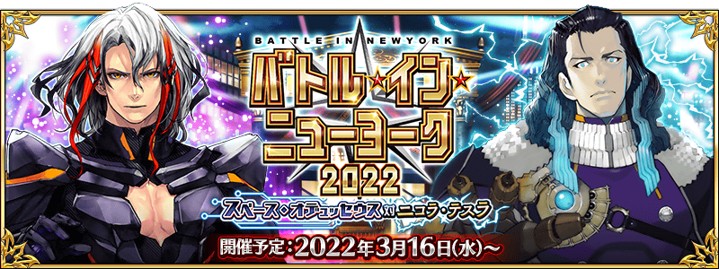
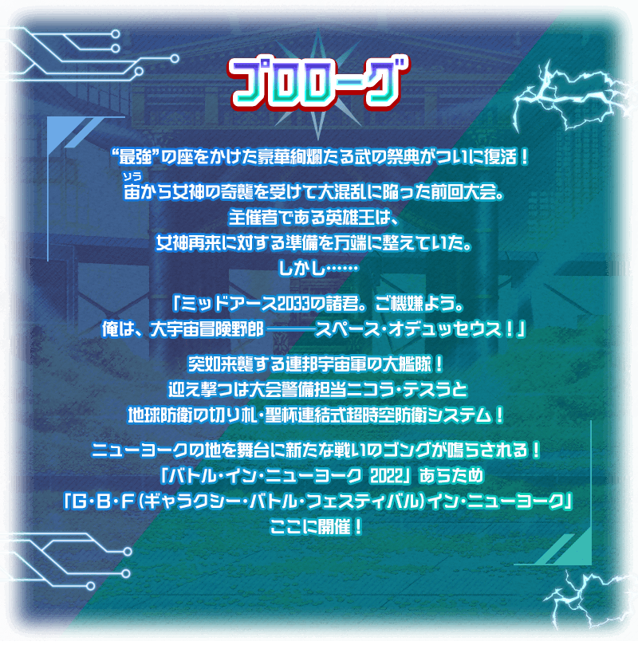

決定期間限定活動「BATTLE IN NEWYORK 2022 ～宇宙・奧德修斯對尼古拉・特斯拉～」的舉辦！
摻雜蒼輝銀河・從者軍團與迦勒底從者的銀河規模武鬥大會白熱化！
打敗一騎當千的猛者們，贏取銀河“最強”之座與豪華報酬吧！
本活動中，在挑戰與從者戰鬥的大會關卡後，能獲得活動道具。
收集活動道具的話，除了可交換各種報酬外，也可挑戰抽選來贏得各種的比賽獎品。
由於抽選次數沒有能進行無數次，於各關卡收集活動道具來入手各種比賽獎品吧！
另外，通過挑戰無法接關的超高難易度戰鬥的展演關卡的話，可獲得更加豪華的報酬！
※本活動中不會登場新的展演關卡，預定復刻過去活動的展演關卡後再登場。
※本頁面皆為開發中圖片。會有與實際圖片相異的情況。
◆活動舉辦預定◆
2022年3月16日(三) 17:00～(預定)
◆活動參加條件◆
滿足以下條件的御主才能參加
・通過第2部 第1章「Lostbelt No.1 永久凍土帝國 安娜塔西亞 獸國的皇女」
※不需要通過亞種特異點(從Ⅰ到Ⅳ)。